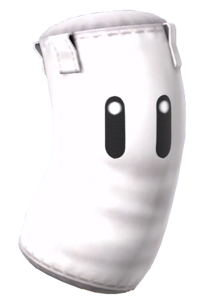

全３ステージ。ＰＣには１ステージにつき２Ｒ分の行動権が与えられます。
２Ｒの間に、ターゲットＮＰＣ【 サンドバッグくん 】へより大きなダメージを与えましょう。
ただし、サンドバッグくんのＨＰが負の値となった場合はそのステージにおける行動権を失います。
ＨＰをギリギリまで０に近づけつつ、トドメは刺さないのがコツです。
ステージ終了時点でサンドバッグくんのＨＰが負の値となっている場合、その絶対値だけ「飛距離」を獲得します。
最終的に「飛距離」の合計が高いＰＣが優勝となります。
また、ステージ終了毎にそのステージでの飛距離を競い、２人勝負なら１位１個、２位０個。３人勝負なら１位２個、２位１個、３位０個。
といった形で、成績によって因子ダイスを得る事ができます。人数が増える度に得られる因子ダイスは繰り上がります。
うまく役立てましょう。
|

摩訶不思議なナマモノ。
殴られるために生まれてきたと考えればなかなか悲惨だが、痛くはないらしい。
| ||||||||||||||||||||||||||||||||||||||